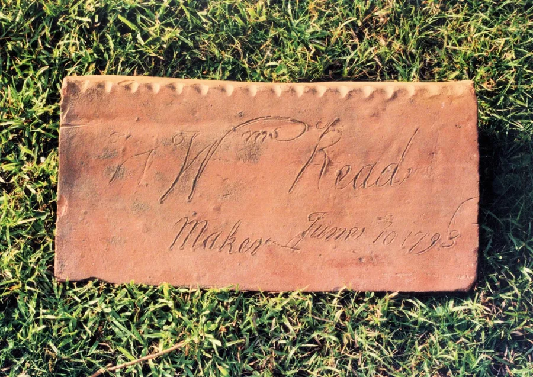
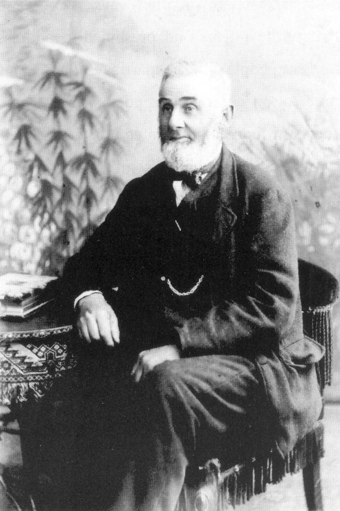
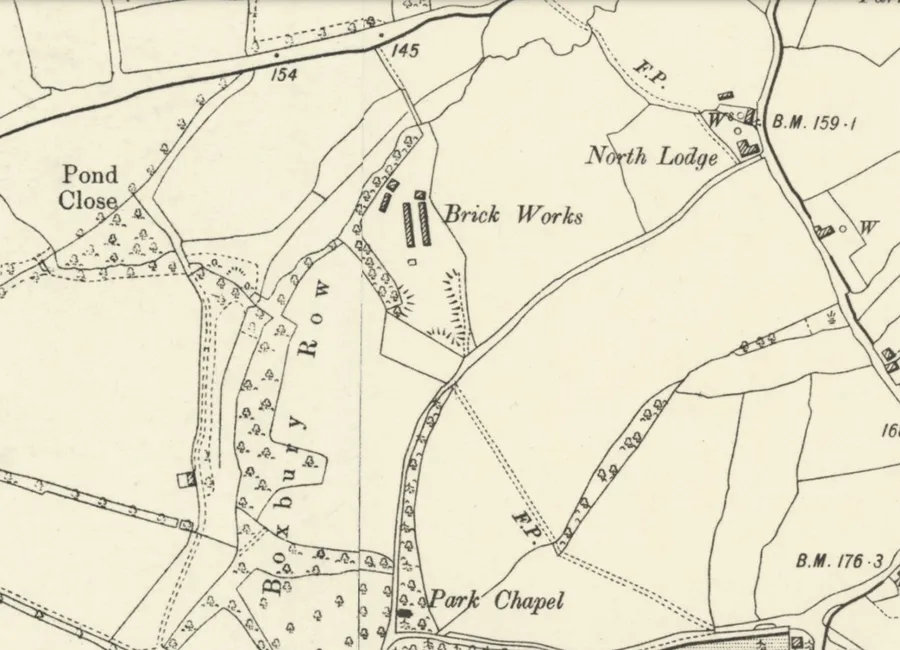
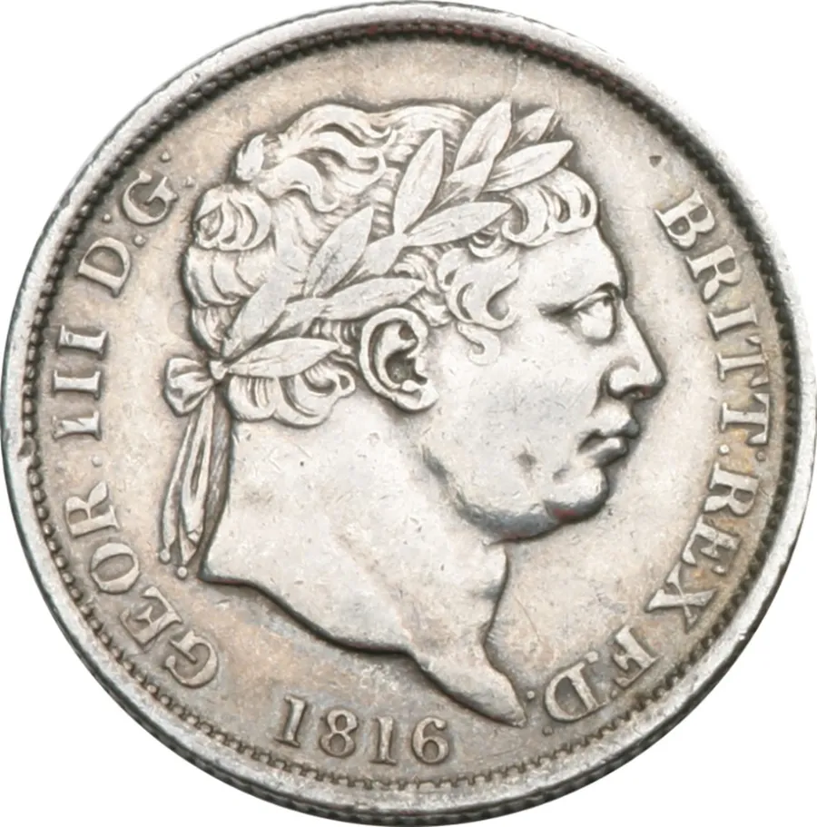
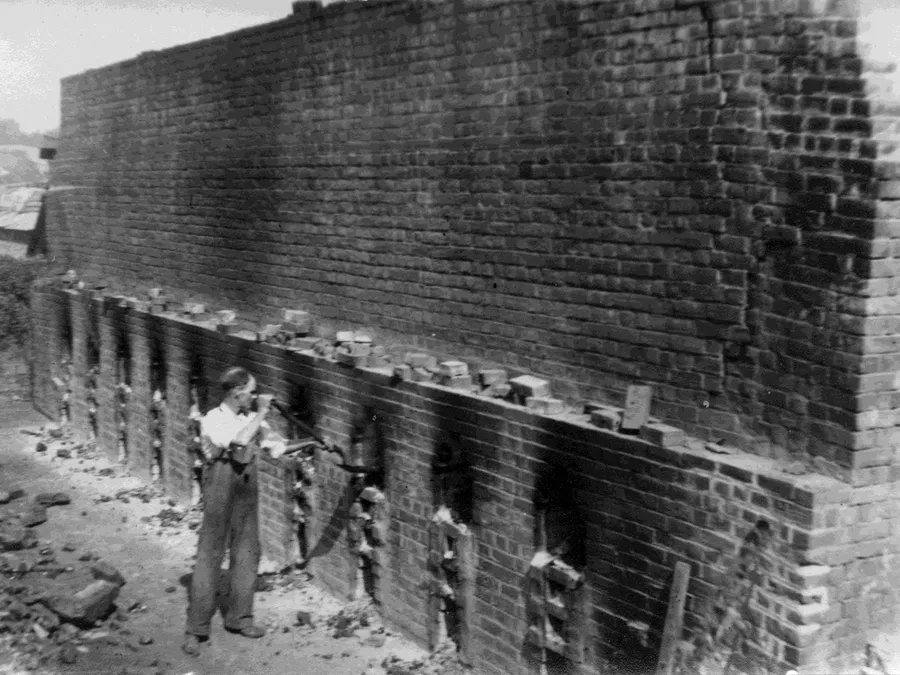
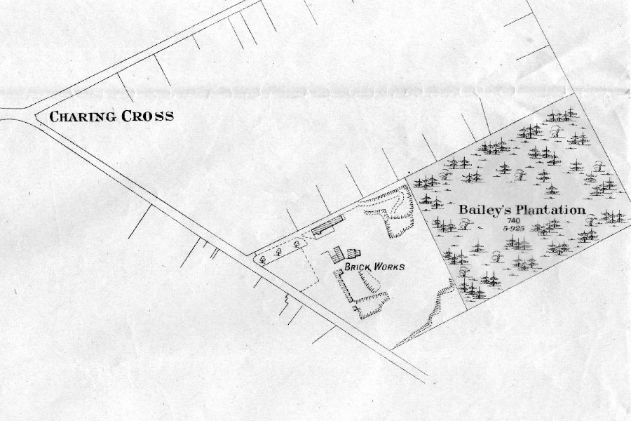
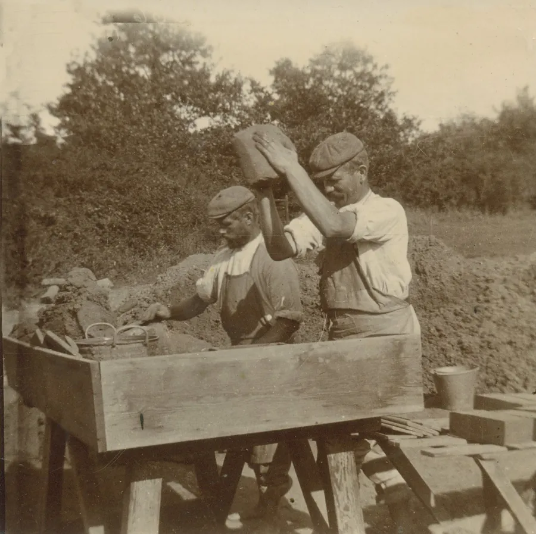
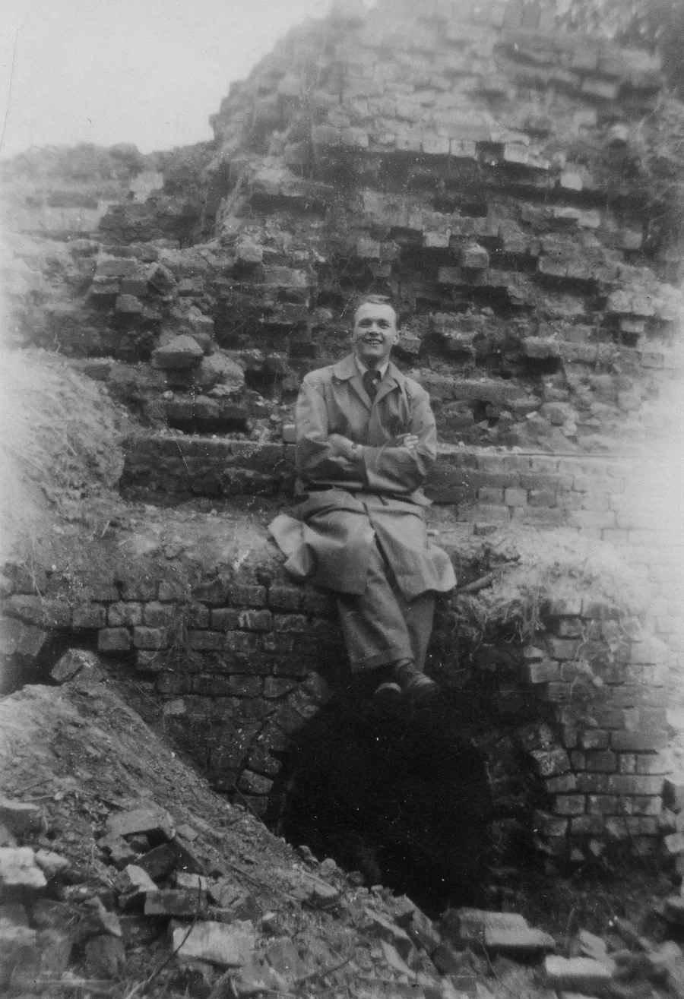

Brickworks — Part I
by Adrian King

For many years bricks had been made from the deposits of London Clay found in the parish. One of the earliest records was in 1635 when William Wigg was granted a lease for ‘a piece of ground taken out of the common and enclosed to make brick.’
Brickworks Locations in the Area
Boxbury Situated opposite Periwinkle Copse on Bullhill.
Brick Kiln Bottom Near Lower Daggons. The name has contracted to Bricklebottom and the track starts near the top of Broxhill.
Camel Green Situated off Antells Way. Shannon Rake were recorded as the brick manufacturer in KA1915**, 1920, 1923, 1927, with 1931. G. Billett and Sons in KA1939
Daggons Road Brickyard Station Yard behind the Churchill Arms.
Hillbury Old maps show a Brick kiln on the east side of Hillbury road opposite Windsor Way.
Marlow’s Don Hibberd mentions a brickyard in the vicinity of Manor Farm called Marlow’s Brickyard.
Charing Cross Ringwood Road near the entrance to Earlswood Drive. It is possible that it was also known as Daggons Road or Alderholt Brickyard. Operated by William Read for a time. Owned by G. Billett and Sons in MoW** 1943.
China Cottage Near Ashes Farm in Cranborne.
Boxbury
Boxbury was the site of a brickyard opposite Periwinkle Copse on Bull Hill Road operated possibly by William Read.

Aaron Read probably took this yard over on his father’s death in 1837. A headed invoice from the Sandleheath Yard puts the date of establishment as 1837. Aaron operated two other brickyards in the parish, one being the Charing Cross Ringwood Road Brickyard but the other is unknown.
At Boxbury there was a brickyard and kiln with an adjoining dwelling house. The brickworks covered an area of 14 acres 2 roods and 1 perch. On 29th September 1873 Aaron agreed to rent the land and buildings he already occupied in the area for a further twenty years. The annual rent to Mr. Churchill was £47 (£100) and the yard was also contracted to supply bricks to the park for 28 shillings per thousand from all his brickyards.

Samuel Reed took over the brickyard after his father’s death in 1894. Bricks from Boxbury were used to build the kilns at Sandleheath when the family moved there. Aaron Read was living at Alderholt Mill Farm when they had the Brickyard.
George Thorne (?) from Crendell worked at the yard. He was asked what the silver coin was that hung around his neck. It seems that it was all that was left of a hoard of George III silver coins that had been found at the works. The rest “got in the way” and were mixed in with the clay.

It is entirely possible that a number of the buildings around here may be made from bricks containing silver coins. A school friend, Bob Hill played a prank on me at school in the sixties saying that he had found some coins.

Charing Cross Ringwood Road
Aaron Read operated the land off Ringwood Road for a while. On 29th September 1873 Aaron agreed to rent 4 acres and 2 roods of land known as Blacksmiths Piece or Baileys Piece from George Churchill. The charge was £5 per annum for a further twenty years.
Also included was 1 acre 3 roods and 28 perches on the south side of the railway at Daggons Road Station. In the contract bricks were fixed at £1. 8s. per 1000. Again, William Read took over the Brickyard on his father’s death in 1894.

In 1943 Billett and Sons owned the brickworks. They were probably using the works to extract clay for their brickyards in Sandleheath.

The northern edge of the brickworks was near the entrance to Earlswood Drive from Ringwood Road where 2 Earlswood Drive is. The whole site included all of Pine Road and part of Oak Road. The landscaped area between Oak Road and Earlswood Drive was a pit.
Brickle Bottom SU094126–SU097130*
Brickle Bottom is a track E34/26 leading from the road at Broxhill towards Lower Daggons. Probably a corruption of Brickhill Bottom. The arable field near the track shown as 636 on the Alderholt Tithe Map Apportionment is called Brick Kiln Bottom.
China Cottage

Dennis Bailey said
“When I was about 19 my girlfriend now my wife and I went to explore the woods at China Cottage as my father had said that the old kiln was still visible where my grandfather Harry Bailey used to burn bricks for the estate. This is situated near Ashes Farm not far from Jordon Hill. We were quite exhilarated when we found it in a hazel coppice with the long hazel rods almost concealing it.
"Immediately we knew that it was old because unlike the kilns in the brickyard owned by my girlfriend’s father at Sandleheath the fire hole was much larger. This was designed for taking 'bavins' which are bundles of hazel rods. Later kilns were designed to take coal. My father said that the job of burning with bavins was extremely tiring as when the kiln had reached its hottest the bundle was consumed almost immediately. We returned some years later but could not find it and assume it had been taken down and the bricks which by then had some value had been sold. Fortunately my girlfriend took a photo of me sitting on the kiln on our first visit.”

All the brickworks in the area including Verwood were closed by 1939.
* The OS National Grid references (SU etc) can be viewed using Grid Reference Finder or the Ordinance Survey website.
** KAxxxx Kelly's Alderholt, MoW Ministry of Works